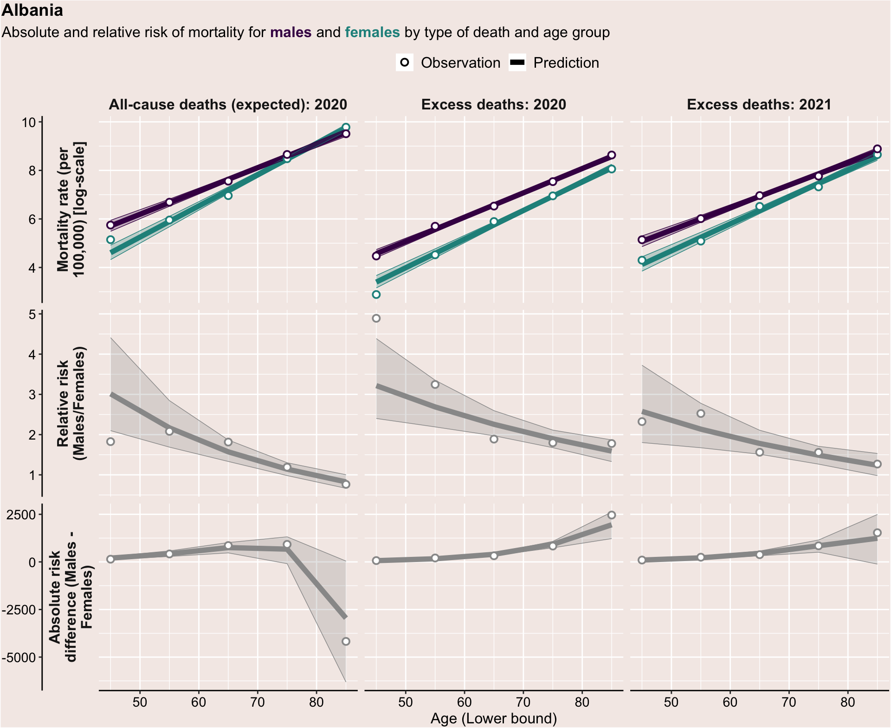
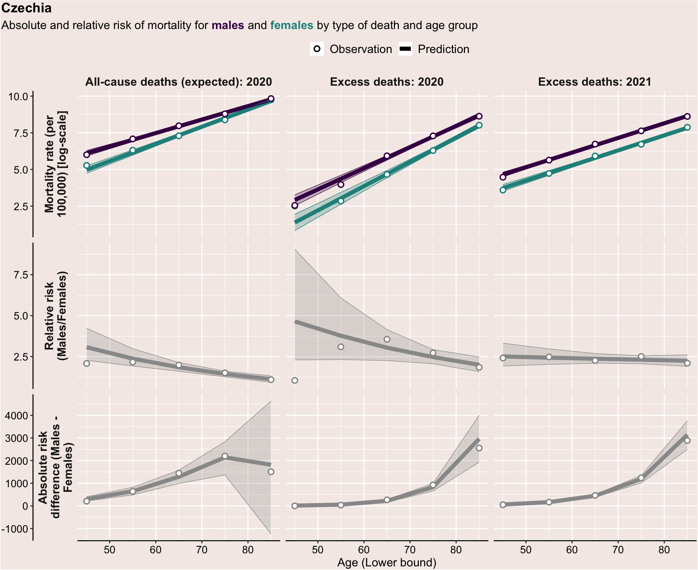
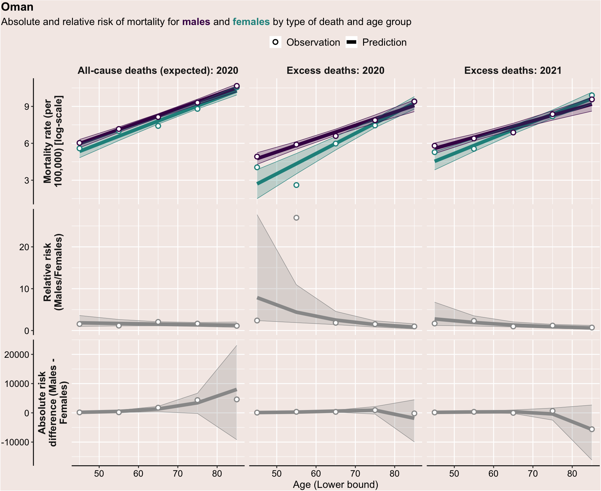

| Income quintile | No. of countries | Range of GNI per capita (PPP) in quintile | Countires in quintile |
|---|---|---|---|
| 1 | 22 | 5,030 - 15,530 | Albania, Azerbaijan, Bolivia (Plurinational State of), Brazil, Colombia, Cuba, Ecuador, Egypt, Georgia, Guatemala, Iran (Islamic Republic of), Iraq, Kyrgyzstan, Republic of Moldova, Mongolia, Nicaragua, Peru, Paraguay, Tunisia, Ukraine, Uzbekistan, South Africa |
| 2 | 22 | 16,090 - 33,730 | Argentina, Bulgaria, Bosnia and Herzegovina, Chile, Costa Rica, Dominican Republic, Greece, Croatia, Hungary, Kazakhstan, Latvia, Mexico, Oman, Panama, Poland, Romania, Russian Federation, Serbia, Slovakia, Thailand, Uruguay, Malaysia |
| 3 | 22 | 36,330 - 70,150 | Australia, Austria, Belgium, Canada, Switzerland, Czechia, Germany, Spain, Estonia, Finland, France, The United Kingdom, Israel, Italy, Japan, Republic of Korea, Kuwait, Lithuania, Netherlands, Portugal, Sweden, USA |
Age-sex patterns of COVID mortality across countries
Introduction
This paper seeks to understand how mortality risks from COVID for men and women differ by age, and how gender differences in mortality risk from COVID compare to gender differences in mortality risks from all-causes.
Data
This analyses in this paper use global excess deaths associated with COVID-19 (modeled estimates) produced by the Technical Advisory Group (TAG) on COVID-19 mortality assessment. Estimates of expected all-cause deaths (baseline), actual cause deaths and excess deaths are provided by country and 7 age groups:“0-24” , “25-34” , 35-44”, “45-54”, “55-64”, “65-74”, “75-84”, “>85”. However, only age groups at or above 45 years of age are considered in this analysis.
Out of 195 countries in the WHO database, 75 countries have excess death estimates based on reported all-cause death records disaggregated by gender for 2020 and of these, 61 also use reported deaths by gender and age for 2021.
Two inclusion criteria for this analysis are applied:
Countries with all-cause data reported by both age and sex in 2020 or 2021
Countries with total excess deaths (both sexes) of at least 2000 in 2020 or 2021
The following 66 countries are included in this analysis: Albania, Argentina, Australia, Austria, Azerbaijan, Belgium, Bulgaria, Bosnia and Herzegovina, Bolivia (Plurinational State of), Brazil, Canada, Switzerland, Chile, Colombia, Costa Rica, Cuba, Czechia, Germany, Dominican Republic, Ecuador, Egypt, Spain, Estonia, Finland, France, The United Kingdom, Georgia, Greece, Guatemala, Croatia, Hungary, Iran (Islamic Republic of), Iraq, Israel, Italy, Japan, Kazakhstan, Kyrgyzstan, Republic of Korea, Kuwait, Lithuania, Latvia, Republic of Moldova, Mexico, Mongolia, Nicaragua, Netherlands, Oman, Panama, Peru, Poland, Portugal, Paraguay, Romania, Russian Federation, Serbia, Slovakia, Sweden, Thailand, Tunisia, Ukraine, Uruguay, USA, Uzbekistan, South Africa, Malaysia
54 countries meet the inclusion criteria in 2020
57 countries meet the inclusion criteria in 2021
Table 1: Sample of countries in analysis data-set by GNI per capita (PPP) quintiles
Results
Figure 0: Sex-ratio in mortality (expected and actual all-cause deaths in 2020): Observations
Not included in final paper

Figure 1: Sex-ratio in mortality (all-causes in 2020): Observations
Figure 2: Sex-ratio in mortality (all-causes in 2020): Observations
Table 2A: Poisson model results

Table 2B: Poisson model results
Relationship between predicted sex-differences in mortality and country income
Figure 3: Sex ratio of mortality by age, year and country income terciles
Warning: There was 1 warning in `mutate()`.
ℹ In argument: `logp5 = ifelse(...)`.
Caused by warning in `log()`:
! NaNs produced
Table 3: Sex ratio of mortality by age, year and country income terciles
| group | Age_Lower | Quintile: 1 | Quintile: 2 | Quintile: 3 |
|---|---|---|---|---|
| All-cause deaths (expected): 2020 | 45 | 2.08 (1.6-2.84) | 2.75 (2.05-3.49) | 2.66 (1.95-3.7) |
| All-cause deaths (expected): 2020 | 55 | 1.83 (1.54-2.25) | 2.23 (1.79-2.63) | 2.14 (1.69-2.73) |
| All-cause deaths (expected): 2020 | 65 | 1.62 (1.45-1.83) | 1.82 (1.59-1.98) | 1.71 (1.47-2.03) |
| All-cause deaths (expected): 2020 | 75 | 1.44 (1.27-1.61) | 1.47 (1.34-1.57) | 1.37 (1.25-1.53) |
| All-cause deaths (expected): 2020 | 85 | 1.25 (1.1-1.45) | 1.17 (1.05-1.33) | 1.11 (1-1.22) |
| Excess deaths: 2020 | 45 | 2.33 (1.45-3.5) | 2.76 (2.01-5.17) | 3.98 (2.49-6.47) |
| Excess deaths: 2020 | 55 | 2.29 (1.56-3.04) | 2.49 (1.99-3.67) | 3.17 (2.15-4.58) |
| Excess deaths: 2020 | 65 | 2.14 (1.65-2.77) | 2.31 (1.94-2.9) | 2.54 (1.89-3.31) |
| Excess deaths: 2020 | 75 | 1.95 (1.56-2.61) | 2.03 (1.75-2.55) | 2.08 (1.64-2.49) |
| Excess deaths: 2020 | 85 | 1.84 (1.37-2.69) | 1.81 (1.39-2.44) | 1.62 (1.3-2.02) |
| Excess deaths: 2021 | 45 | 1.68 (1.11-2.38) | 2.19 (1.61-3.06) | 2.25 (1.29-3.5) |
| Excess deaths: 2021 | 55 | 1.64 (1.19-2.11) | 1.95 (1.56-2.43) | 2.22 (1.5-3.1) |
| Excess deaths: 2021 | 65 | 1.56 (1.27-1.91) | 1.79 (1.48-2.06) | 2.19 (1.65-2.99) |
| Excess deaths: 2021 | 75 | 1.51 (1.22-1.8) | 1.6 (1.35-1.87) | 2.19 (1.6-3.29) |
| Excess deaths: 2021 | 85 | 1.44 (1.06-1.84) | 1.42 (1.14-1.74) | 2.18 (1.37-3.9) |
Figure 4: Sex-ratio of mortality vs. country income
All available data (composition of countries changes from 2020 to 2021)

Figure 5: Sex-ratio of mortality vs. country income
Keeping composition of countries constant (only countries with all cause deaths disaggregated by gender in 2020 & 2021)
Annex
Observatios and predictions by country
The following set of figures display observed and predicted values of mortality rates, the sex-ratio of mortality rates (males/females) and the sex-gap of mortality rates (males - females) by age, for each country in the analysis dataset.
Albania
- Total population: 2,864,098
- Total official COVID deaths in 2020 (Our World in Data): 1,134
- Total official COVID deaths in 2021 (Our World in Data): 2,053
- Total excess deaths in 2020 (WHO): 6,015.699
- Total excess deaths in 2021 (WHO): 9,086.141

Argentina
- Total population: 44,985,105
- Total official COVID deaths in 2020 (Our World in Data): 47,507
- Total official COVID deaths in 2021 (Our World in Data): 70,323
- Total excess deaths in 2020 (WHO): 35,840.96
- Total excess deaths in 2021 (WHO):
Australia
- Total population: 25,625,670
- Total official COVID deaths in 2020 (Our World in Data): 920
- Total official COVID deaths in 2021 (Our World in Data): 1,457
- Total excess deaths in 2020 (WHO):
- Total excess deaths in 2021 (WHO): 4,570.856
Austria
- Total population: 8,888,592
- Total official COVID deaths in 2020 (Our World in Data): 7,049
- Total official COVID deaths in 2021 (Our World in Data): 9,538
- Total excess deaths in 2020 (WHO): 8,087.427
- Total excess deaths in 2021 (WHO): 7,886.081

Azerbaijan
- Total population: 10,282,158
- Total official COVID deaths in 2020 (Our World in Data): 2,416
- Total official COVID deaths in 2021 (Our World in Data): 5,868
- Total excess deaths in 2020 (WHO): 12,039.15
- Total excess deaths in 2021 (WHO): 21,581.59
Belgium
- Total population: 11,533,459
- Total official COVID deaths in 2020 (Our World in Data): 19,374
- Total official COVID deaths in 2021 (Our World in Data): 8,818
- Total excess deaths in 2020 (WHO): 16,540.23
- Total excess deaths in 2021 (WHO): 3,794.365
Bulgaria
- Total population: 6,967,018
- Total official COVID deaths in 2020 (Our World in Data): 7,123
- Total official COVID deaths in 2021 (Our World in Data): 23,405
- Total excess deaths in 2020 (WHO): 17,804.05
- Total excess deaths in 2021 (WHO): 42,715.42
Bosnia and Herzegovina
- Total population: 3,314,350
- Total official COVID deaths in 2020 (Our World in Data): 3,923
- Total official COVID deaths in 2021 (Our World in Data): 9,360
- Total excess deaths in 2020 (WHO): 6,792.844
- Total excess deaths in 2021 (WHO):
Bolivia (Plurinational State of)
- Total population: 11,934,333
- Total official COVID deaths in 2020 (Our World in Data): 9,083
- Total official COVID deaths in 2021 (Our World in Data): 10,447
- Total excess deaths in 2020 (WHO): 33,888.56
- Total excess deaths in 2021 (WHO): 47,020.77
Brazil
- Total population: 213,114,918
- Total official COVID deaths in 2020 (Our World in Data): 190,488
- Total official COVID deaths in 2021 (Our World in Data): 427,904
- Total excess deaths in 2020 (WHO): 189,945.8
- Total excess deaths in 2021 (WHO): 467,480.1

Canada
- Total population: 37,818,806
- Total official COVID deaths in 2020 (Our World in Data): 14,734
- Total official COVID deaths in 2021 (Our World in Data): 15,117
- Total excess deaths in 2020 (WHO): 14,551.54
- Total excess deaths in 2021 (WHO): 11,949.19

Switzerland
- Total population: 8,619,390
- Total official COVID deaths in 2020 (Our World in Data): 7,182
- Total official COVID deaths in 2021 (Our World in Data): 4,646
- Total excess deaths in 2020 (WHO): 8,808.004
- Total excess deaths in 2021 (WHO): 3,683.951
Chile
- Total population: 19,276,612
- Total official COVID deaths in 2020 (Our World in Data): 16,404
- Total official COVID deaths in 2021 (Our World in Data): 22,609
- Total excess deaths in 2020 (WHO): 14,771.02
- Total excess deaths in 2021 (WHO): 23,894.96

Colombia
- Total population: 50,911,158
- Total official COVID deaths in 2020 (Our World in Data): 41,690
- Total official COVID deaths in 2021 (Our World in Data): 87,996
- Total excess deaths in 2020 (WHO): 53,886.16
- Total excess deaths in 2021 (WHO): 108,332.4

Costa Rica
- Total population: 5,119,855
- Total official COVID deaths in 2020 (Our World in Data): 2,103
- Total official COVID deaths in 2021 (Our World in Data): 5,246
- Total excess deaths in 2020 (WHO):
- Total excess deaths in 2021 (WHO): 4,704.336
Cuba
- Total population: 11,284,757
- Total official COVID deaths in 2020 (Our World in Data): 141
- Total official COVID deaths in 2021 (Our World in Data): 8,179
- Total excess deaths in 2020 (WHO):
- Total excess deaths in 2021 (WHO): 53,096.88

Czechia
- Total population: 10,514,740
- Total official COVID deaths in 2020 (Our World in Data): 11,367
- Total official COVID deaths in 2021 (Our World in Data): 24,621
- Total excess deaths in 2020 (WHO): 16,599.66
- Total excess deaths in 2021 (WHO): 26,648.28

Germany
- Total population: 83,116,786
- Total official COVID deaths in 2020 (Our World in Data): 47,009
- Total official COVID deaths in 2021 (Our World in Data): 70,683
- Total excess deaths in 2020 (WHO): 34,514.19
- Total excess deaths in 2021 (WHO): 66,990.79

Dominican Republic
- Total population: 10,994,170
- Total official COVID deaths in 2020 (Our World in Data): 2,404
- Total official COVID deaths in 2021 (Our World in Data): 1,833
- Total excess deaths in 2020 (WHO): 2,333.078
- Total excess deaths in 2021 (WHO): 6,689.009

Ecuador
- Total population: 17,580,085
- Total official COVID deaths in 2020 (Our World in Data): 13,990
- Total official COVID deaths in 2021 (Our World in Data): 19,657
- Total excess deaths in 2020 (WHO): 46,706.66
- Total excess deaths in 2021 (WHO): 32,874.78
Egypt
- Total population: 107,450,137
- Total official COVID deaths in 2020 (Our World in Data): 7,352
- Total official COVID deaths in 2021 (Our World in Data): 14,219
- Total excess deaths in 2020 (WHO): 107,524
- Total excess deaths in 2021 (WHO):
Spain
- Total population: 47,233,572
- Total official COVID deaths in 2020 (Our World in Data): 53,964
- Total official COVID deaths in 2021 (Our World in Data): 37,311
- Total excess deaths in 2020 (WHO): 75,201.66
- Total excess deaths in 2021 (WHO): 32,336.08

Estonia
- Total population: 1,326,400
- Total official COVID deaths in 2020 (Our World in Data): 284
- Total official COVID deaths in 2021 (Our World in Data): 1,544
- Total excess deaths in 2020 (WHO):
- Total excess deaths in 2021 (WHO): 3,037.613

Finland
- Total population: 5,516,103
- Total official COVID deaths in 2020 (Our World in Data): 618
- Total official COVID deaths in 2021 (Our World in Data): 1,218
- Total excess deaths in 2020 (WHO):
- Total excess deaths in 2021 (WHO): 2,868.022
France
- Total population: 64,291,311
- Total official COVID deaths in 2020 (Our World in Data): 63,534
- Total official COVID deaths in 2021 (Our World in Data): 60,631
- Total excess deaths in 2020 (WHO): 50,200.12
- Total excess deaths in 2021 (WHO): 37,445.36

The United Kingdom
- Total population: 66,921,778
- Total official COVID deaths in 2020 (Our World in Data): 90,475
- Total official COVID deaths in 2021 (Our World in Data): 85,684
- Total excess deaths in 2020 (WHO): 81,734.67
- Total excess deaths in 2021 (WHO): 65,350.31
Georgia
- Total population: 3,762,236
- Total official COVID deaths in 2020 (Our World in Data): 2,377
- Total official COVID deaths in 2021 (Our World in Data): 11,135
- Total excess deaths in 2020 (WHO): 5,738.193
- Total excess deaths in 2021 (WHO): 17,255.76
Greece
- Total population: 10,484,757
- Total official COVID deaths in 2020 (Our World in Data): 4,682
- Total official COVID deaths in 2021 (Our World in Data): 15,823
- Total excess deaths in 2020 (WHO): 7,277.952
- Total excess deaths in 2021 (WHO): 19,485.75

Guatemala
- Total population: 17,355,773
- Total official COVID deaths in 2020 (Our World in Data): 4,763
- Total official COVID deaths in 2021 (Our World in Data): 11,332
- Total excess deaths in 2020 (WHO): 12,580.13
- Total excess deaths in 2021 (WHO): 36,476.57

Croatia
- Total population: 4,089,053
- Total official COVID deaths in 2020 (Our World in Data): 3,613
- Total official COVID deaths in 2021 (Our World in Data): 8,666
- Total excess deaths in 2020 (WHO): 5,870.759
- Total excess deaths in 2021 (WHO): 12,268.29

Hungary
- Total population: 9,733,129
- Total official COVID deaths in 2020 (Our World in Data): 9,047
- Total official COVID deaths in 2021 (Our World in Data): 29,260
- Total excess deaths in 2020 (WHO): 12,046.75
- Total excess deaths in 2021 (WHO): 26,972.14

Iran (Islamic Republic of)
- Total population: 87,266,417
- Total official COVID deaths in 2020 (Our World in Data): 54,574
- Total official COVID deaths in 2021 (Our World in Data): 76,774
- Total excess deaths in 2020 (WHO): 136,293.9
- Total excess deaths in 2021 (WHO): 159,238.4

Iraq
- Total population: 42,553,401
- Total official COVID deaths in 2020 (Our World in Data): 12,767
- Total official COVID deaths in 2021 (Our World in Data): 11,355
- Total excess deaths in 2020 (WHO): 28,125.58
- Total excess deaths in 2021 (WHO):

Israel
- Total population: 8,746,610
- Total official COVID deaths in 2020 (Our World in Data): 3,242
- Total official COVID deaths in 2021 (Our World in Data): 5,009
- Total excess deaths in 2020 (WHO): 3,177.944
- Total excess deaths in 2021 (WHO): 4,795.487
Italy
- Total population: 59,314,503
- Total official COVID deaths in 2020 (Our World in Data): 71,627
- Total official COVID deaths in 2021 (Our World in Data): 64,903
- Total excess deaths in 2020 (WHO): 109,157.4
- Total excess deaths in 2021 (WHO): 75,106.86

Japan
- Total population: 124,706,807
- Total official COVID deaths in 2020 (Our World in Data): 3,213
- Total official COVID deaths in 2021 (Our World in Data): 15,174
- Total excess deaths in 2020 (WHO):
- Total excess deaths in 2021 (WHO): 22,117.4

Kazakhstan
- Total population: 18,973,597
- Total official COVID deaths in 2020 (Our World in Data): 2,669
- Total official COVID deaths in 2021 (Our World in Data): 15,516
- Total excess deaths in 2020 (WHO): 31,218.43
- Total excess deaths in 2021 (WHO): 52,050.25

Kyrgyzstan
- Total population: 6,423,515
- Total official COVID deaths in 2020 (Our World in Data): NA
- Total official COVID deaths in 2021 (Our World in Data): NA
- Total excess deaths in 2020 (WHO): 7,420.808
- Total excess deaths in 2021 (WHO):

Republic of Korea
- Total population: 51,776,733
- Total official COVID deaths in 2020 (Our World in Data): 808
- Total official COVID deaths in 2021 (Our World in Data): 4,492
- Total excess deaths in 2020 (WHO):
- Total excess deaths in 2021 (WHO): 8,229.939

Kuwait
- Total population: 4,360,120
- Total official COVID deaths in 2020 (Our World in Data): 929
- Total official COVID deaths in 2021 (Our World in Data): 1,539
- Total excess deaths in 2020 (WHO): 3,203.663
- Total excess deaths in 2021 (WHO): 3,344.758

Lithuania
- Total population: 2,813,500
- Total official COVID deaths in 2020 (Our World in Data): 1,617
- Total official COVID deaths in 2021 (Our World in Data): 5,685
- Total excess deaths in 2020 (WHO): 6,154.16
- Total excess deaths in 2021 (WHO): 11,292.63
Latvia
- Total population: 1,892,761
- Total official COVID deaths in 2020 (Our World in Data): 632
- Total official COVID deaths in 2021 (Our World in Data): 4,183
- Total excess deaths in 2020 (WHO):
- Total excess deaths in 2021 (WHO): 6,846.926

Republic of Moldova
- Total population: 3,082,703
- Total official COVID deaths in 2020 (Our World in Data): 2,960
- Total official COVID deaths in 2021 (Our World in Data): 7,224
- Total excess deaths in 2020 (WHO): 5,436.351
- Total excess deaths in 2021 (WHO): 10,905.46

Mexico
- Total population: 125,917,904
- Total official COVID deaths in 2020 (Our World in Data): 143,890
- Total official COVID deaths in 2021 (Our World in Data): 159,365
- Total excess deaths in 2020 (WHO): 297,154
- Total excess deaths in 2021 (WHO): 315,216
Mongolia
- Total population: 3,293,544
- Total official COVID deaths in 2020 (Our World in Data): 1
- Total official COVID deaths in 2021 (Our World in Data): 1,980
- Total excess deaths in 2020 (WHO):
- Total excess deaths in 2021 (WHO): 2,599.867

Nicaragua
- Total population: 6,754,777
- Total official COVID deaths in 2020 (Our World in Data): 164
- Total official COVID deaths in 2021 (Our World in Data): 52
- Total excess deaths in 2020 (WHO): 8,118.323
- Total excess deaths in 2021 (WHO):
Netherlands
- Total population: 17,403,110
- Total official COVID deaths in 2020 (Our World in Data): 11,539
- Total official COVID deaths in 2021 (Our World in Data): 9,421
- Total excess deaths in 2020 (WHO): 14,530.01
- Total excess deaths in 2021 (WHO): 16,001.69
Oman
- Total population: 4,542,924
- Total official COVID deaths in 2020 (Our World in Data): 1,491
- Total official COVID deaths in 2021 (Our World in Data): 2,989
- Total excess deaths in 2020 (WHO): 2,534.465
- Total excess deaths in 2021 (WHO): 5,942.41

Panama
- Total population: 4,291,548
- Total official COVID deaths in 2020 (Our World in Data): 3,756
- Total official COVID deaths in 2021 (Our World in Data): 3,653
- Total excess deaths in 2020 (WHO): 2,861.276
- Total excess deaths in 2021 (WHO):
Peru
- Total population: 33,290,096
- Total official COVID deaths in 2020 (Our World in Data): 92,523
- Total official COVID deaths in 2021 (Our World in Data): 109,931
- Total excess deaths in 2020 (WHO): 100,106.6
- Total excess deaths in 2021 (WHO): 124,084.2

Poland
- Total population: 38,358,520
- Total official COVID deaths in 2020 (Our World in Data): 27,207
- Total official COVID deaths in 2021 (Our World in Data): 67,123
- Total excess deaths in 2020 (WHO): 63,032.16
- Total excess deaths in 2021 (WHO): 100,112.2
Portugal
- Total population: 10,274,559
- Total official COVID deaths in 2020 (Our World in Data): 6,695
- Total official COVID deaths in 2021 (Our World in Data): 12,193
- Total excess deaths in 2020 (WHO): 11,245.03
- Total excess deaths in 2021 (WHO): 12,245.21

Paraguay
- Total population: 6,615,894
- Total official COVID deaths in 2020 (Our World in Data): 2,154
- Total official COVID deaths in 2021 (Our World in Data): 14,444
- Total excess deaths in 2020 (WHO):
- Total excess deaths in 2021 (WHO): 18,371.62

Romania
- Total population: 19,411,764
- Total official COVID deaths in 2020 (Our World in Data): 15,108
- Total official COVID deaths in 2021 (Our World in Data): 43,428
- Total excess deaths in 2020 (WHO): 37,164.14
- Total excess deaths in 2021 (WHO): 76,235.53
Russian Federation
- Total population: 145,420,443
- Total official COVID deaths in 2020 (Our World in Data): 54,778
- Total official COVID deaths in 2021 (Our World in Data): 249,440
- Total excess deaths in 2020 (WHO): 380,136.8
- Total excess deaths in 2021 (WHO): 713,027.8
Serbia
- Total population: 7,347,278
- Total official COVID deaths in 2020 (Our World in Data): 2,983
- Total official COVID deaths in 2021 (Our World in Data): 9,585
- Total excess deaths in 2020 (WHO): 16,724.08
- Total excess deaths in 2021 (WHO): 36,442.32
Slovakia
- Total population: 5,449,592
- Total official COVID deaths in 2020 (Our World in Data): 1,773
- Total official COVID deaths in 2021 (Our World in Data): 14,625
- Total excess deaths in 2020 (WHO): 5,849.537
- Total excess deaths in 2021 (WHO): 20,291.01

Sweden
- Total population: 10,347,118
- Total official COVID deaths in 2020 (Our World in Data): 9,323
- Total official COVID deaths in 2021 (Our World in Data): 5,979
- Total excess deaths in 2020 (WHO): 8,932.776
- Total excess deaths in 2021 (WHO): 3,273.921
Thailand
- Total population: 71,392,182
- Total official COVID deaths in 2020 (Our World in Data): 60
- Total official COVID deaths in 2021 (Our World in Data): 21,520
- Total excess deaths in 2020 (WHO): 7,530.558
- Total excess deaths in 2021 (WHO): 66,204.06

Tunisia
- Total population: 12,156,148
- Total official COVID deaths in 2020 (Our World in Data): 4,426
- Total official COVID deaths in 2021 (Our World in Data): 21,097
- Total excess deaths in 2020 (WHO): 4,322.457
- Total excess deaths in 2021 (WHO):

Ukraine
- Total population: 43,843,015
- Total official COVID deaths in 2020 (Our World in Data): 15,278
- Total official COVID deaths in 2021 (Our World in Data): 77,255
- Total excess deaths in 2020 (WHO): 43,125.64
- Total excess deaths in 2021 (WHO): 144,710.5
Uruguay
- Total population: 3,422,352
- Total official COVID deaths in 2020 (Our World in Data): 143
- Total official COVID deaths in 2021 (Our World in Data): 6,019
- Total excess deaths in 2020 (WHO):
- Total excess deaths in 2021 (WHO): 5,906.342

USA
- Total population: 335,410,796
- Total official COVID deaths in 2020 (Our World in Data): 342,920
- Total official COVID deaths in 2021 (Our World in Data): 469,667
- Total excess deaths in 2020 (WHO): 467,312.8
- Total excess deaths in 2021 (WHO): 501,112.5

Uzbekistan
- Total population: 33,520,434
- Total official COVID deaths in 2020 (Our World in Data): NA
- Total official COVID deaths in 2021 (Our World in Data): NA
- Total excess deaths in 2020 (WHO): 15,794.15
- Total excess deaths in 2021 (WHO): 14,826.1

South Africa
- Total population: 58,778,516
- Total official COVID deaths in 2020 (Our World in Data): 26,521
- Total official COVID deaths in 2021 (Our World in Data): 64,252
- Total excess deaths in 2020 (WHO): 56,967.63
- Total excess deaths in 2021 (WHO): 189,834.3
Malaysia
- Total population: 33,190,884
- Total official COVID deaths in 2020 (Our World in Data): 451
- Total official COVID deaths in 2021 (Our World in Data): 30,883
- Total excess deaths in 2020 (WHO):
- Total excess deaths in 2021 (WHO):